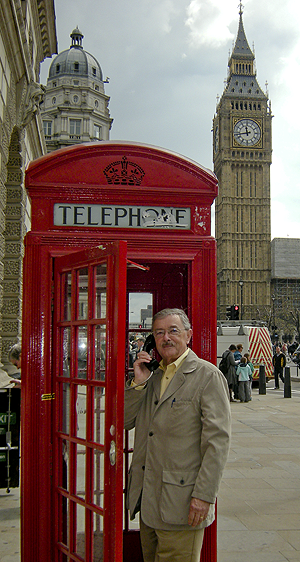

© 2015 J. Jerome Williams, Valdese, NC



WITTE TRAVEL of Grand Rapids, MI has been planning European trips for school, church,
and community groups since 1975.
Whether you want a performance tour, study tour, or leisurely sightseeing tour, WITTE can customize an itinerary to fit your needs. .
Jim Williams has led seven performing groups on European Concert Tours to twelve different countries and has visited Europe more than 30 times.
Since 1994 he has been an independent sales representative for Witte Travel and Tours helping others experience the joy of foreign travel. For more information contact Jim at:
jjerome56@gmail.com, or contact Witte direct at: 800-GO-WITTE ((800-469-4883). Tell them Jim sent you. .
EUROPE: It’s closer than you think!
© 2015 J. Jerome Williams, Valdese, NC